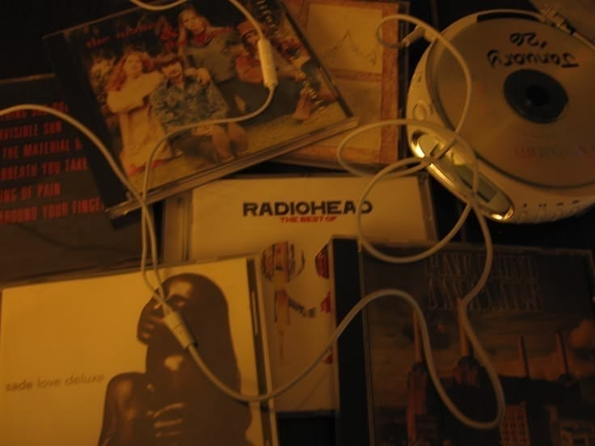
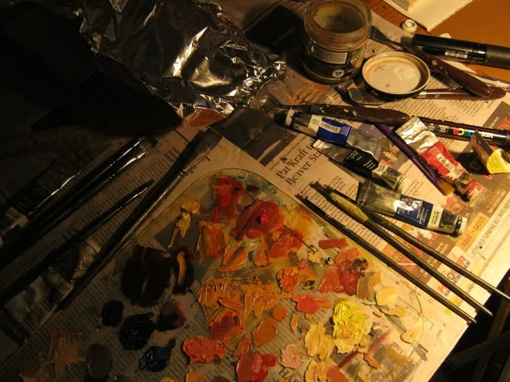
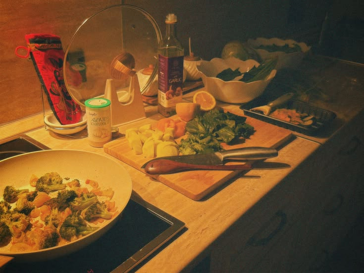
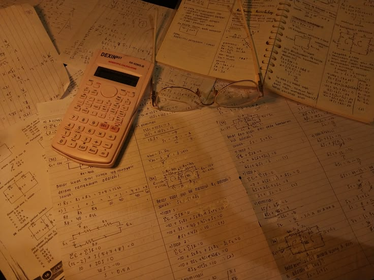
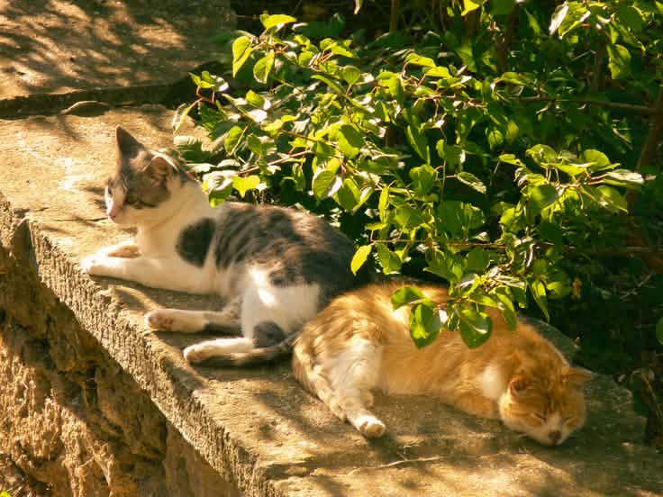

Môn học yêu thích của tôi là môn Vật lý. Tuy nhiên, cũng chỉ yêu thích sương sương thôi!

- Đỗ nguyện vọng 1 vào Trường Đại học Sư phạm Hà Nội.
- Sau khi ra trường có một công việc ổn định, đồng thời bán COMMISSION để kiếm thêm thu nhập.
- Nuôi một bầy mèo đáng yêu.
